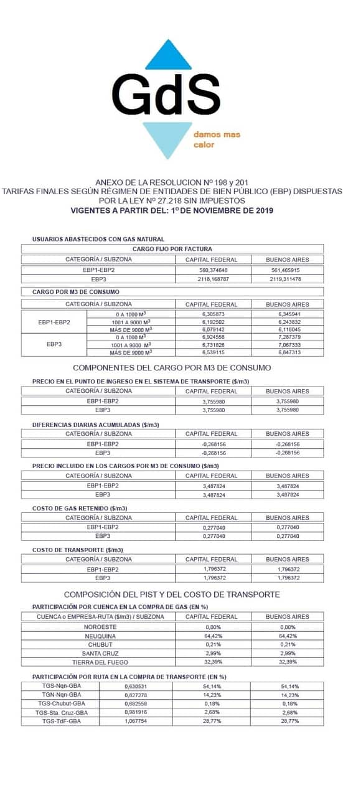

Promociones
Mejoramientos GAS CONECTATE AL GAS NATURAL. HACÉ TU INSTALACIÓN INTERNA FINANCIADA EN 60 CUOTAS FIJAS Y CONTÁ CON ESTOS BENEFICIOS: Gasista matriculado de confianza asegurado. Trámite rápido y sencillo. Empezás a pagar cuando la obra está terminada. LOS REQUISITOS PARA LA INSCRIPCIÓN SON Los ingresos pueden ser formales o informales. Tener entre 18 y 68 años de edad al momento de la inscripción y sin antecedentes negativos en el sistema financiero. La vivienda debe estar ubicada sobre la red de distribución de gas y debe ser posible la conexión.
Cuadro tarifario: Servicio con medidor individual separado para usos domésticos no comerciales. Los consumos para usos domésticos de equipos comunes al Consorcio o a los condóminos en los inmuebles de propiedad horizontal o en condominio, deberán contar con un medidor individual separado. Las categorías correspondientes a usuarios residenciales son: R1, R21, R22, R23, R31, R32, R33, R34. Estas categorías se definen en cada periodo de facturación, tomando el último año (6 últimas facturas en el caso de un cliente bimestral). Al tomar el total de consumos del período, es posible que un cliente pueda cambiar de categoría si varía el consumo entre un período anual y otro.
